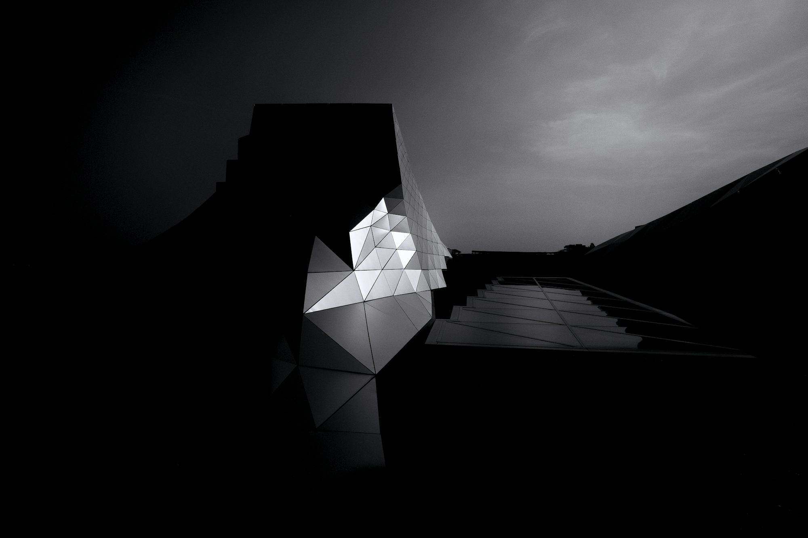

The Enchantment of Museums: Unlocking the Secrets of Knowledge and Culture
This article explores the unique role of museums in society, highlighting their capacity to educate, inspire, and connect communities through diverse cultural experiences.
Art museums are at the forefront of cultural appreciation, providing a platform for the exploration of creativity. Institutions like The Metropolitan Museum of Art in New York and The Tate Modern in London house collections that span centuries and styles, inviting audiences to immerse themselves in the world of visual art. The experience of wandering through these galleries allows visitors to connect emotionally with the works on display, each piece telling its own unique story.
The role of art museums goes beyond mere display; they are dynamic spaces for dialogue and education. Through guided tours, workshops, and lectures, these institutions provide insights into artistic techniques, historical context, and the diverse backgrounds of artists. This engagement fosters a deeper appreciation of art and encourages visitors to explore their own creativity. Furthermore, art museums often host temporary exhibitions that challenge traditional narratives and showcase emerging artists, ensuring that the conversation around art remains vibrant and relevant.
Natural history museums offer another captivating avenue for exploration, celebrating the wonders of our planet. Institutions such as The Field Museum in Chicago and The Natural History Museum in London provide visitors with a glimpse into the complexity of life on Earth. From dinosaur skeletons to interactive exhibits about ecosystems, these museums make the natural world accessible and engaging.
The educational mission of natural history museums extends to promoting awareness about conservation and sustainability. Through exhibits and programs that highlight environmental issues, these institutions inspire visitors to take an active role in protecting our planet. Engaging displays and informative presentations encourage a sense of responsibility and stewardship toward nature, making natural history museums essential for fostering environmental awareness.
Science museums are dedicated to promoting curiosity and innovation, offering hands-on experiences that inspire the next generation of scientists and thinkers. Venues like The Exploratorium in San Francisco and the Science Museum in London feature interactive exhibits that allow visitors to experiment with scientific concepts in a playful and engaging way. By blending education with entertainment, science museums create a unique environment where learning becomes an adventure.
These museums play a crucial role in demystifying complex scientific principles, making them accessible to audiences of all ages. Workshops, demonstrations, and community events further enrich the visitor experience, encouraging collaboration and inquiry. Through these engaging activities, science museums nurture a sense of wonder about the natural world and the universe beyond.
History museums preserve and interpret our collective past, providing valuable insights into the events and people that have shaped our societies. Institutions such as The British Museum and The National Museum of American History house extensive collections of artifacts and documents that tell the story of human civilization. Visitors can explore exhibitions that range from ancient cultures to contemporary events, gaining a deeper understanding of historical contexts.
The narrative woven through history museums helps visitors connect past events to present-day issues, fostering informed citizenship and cultural awareness. By offering educational programs and interactive displays, these museums create engaging experiences that encourage reflection on our shared history. They serve as important resources for understanding the complexities of different cultures and the interconnectedness of global narratives.
Technology museums showcase the innovations that have transformed our world, celebrating the achievements of human ingenuity. Institutions like The Computer History Museum in California and The Museum of Science and Industry in Chicago highlight the evolution of technology, from early inventions to modern advancements. Through engaging exhibits and hands-on experiences, visitors can explore the impact of technology on daily life and society as a whole.
Technology museums not only educate the public about the history of inventions but also inspire future innovation. By hosting workshops, lectures, and special events, these institutions foster a community of learners who appreciate the significance of technological progress. The blend of history and forward-thinking in technology museums creates an environment that encourages exploration and creativity.
Specialty museums cater to niche interests, allowing visitors to delve deeply into specific subjects. These unique institutions, such as The Museum of Pop Culture in Seattle or The National Air and Space Museum in Washington, D.C., celebrate themes that resonate with diverse audiences. By providing focused insights and interactive displays, specialty museums create engaging environments where visitors can pursue their passions.
Children's museums are specifically designed to inspire the next generation, offering interactive exhibits that promote learning through play. Institutions like The Boston Children's Museum and The Children's Museum of Indianapolis create dynamic spaces where kids can explore, experiment, and engage with educational content. Through hands-on activities and creative programs, these museums encourage children to discover their interests and develop critical thinking skills.
The playful atmosphere of children's museums fosters curiosity and exploration, empowering young visitors to ask questions and seek answers. By catering to different age groups and learning styles, these institutions provide valuable resources for families and caregivers. The emphasis on interactive learning not only supports developmental milestones but also cultivates a lifelong love for discovery and education.
As technology continues to evolve, virtual museums have emerged as innovative platforms that extend cultural experiences beyond physical walls. These online institutions offer virtual tours, interactive galleries, and educational resources, allowing individuals to explore museums from anywhere in the world. Virtual museums break down geographical barriers, making art, history, and science accessible to global audiences.
The ability to engage with collections online fosters a wider appreciation for culture and knowledge. Interactive features and educational content create opportunities for users to connect with various subjects, ensuring that learning remains engaging and relevant. By embracing digital technology, virtual museums enhance the visitor experience and expand their reach, creating inclusive spaces for exploration and discovery.
Ethnic and cultural museums celebrate the rich diversity of human experiences, showcasing the traditions, art, and heritage of specific communities. These institutions provide vital platforms for dialogue and understanding, encouraging visitors to appreciate the richness of different cultures. Through curated exhibitions and community events, ethnic and cultural museums promote cultural awareness and respect, fostering connections among diverse populations.
Living museums offer immersive experiences that transport visitors to different times and places. By featuring reenactors, demonstrations, and traditional crafts, living museums allow guests to engage with history in a unique way. Institutions like Colonial Williamsburg and Plimoth Plantation bring history to life, making it accessible and relatable.
The experiential learning offered by living museums deepens visitors’ understanding of past cultures and practices. By participating in demonstrations or interacting with reenactors, guests gain a personal connection to history, fostering appreciation for the complexities of human experiences. Living museums bridge the gap between past and present, inviting visitors to explore the stories that shape our world.
In summary, museums are invaluable cultural institutions that educate, inspire, and connect individuals across diverse backgrounds. From art and history to science and technology, each type of museum offers a unique lens through which to explore our world. By embracing the narratives they present, we cultivate a deeper understanding of ourselves and the societies we inhabit.
Visiting museums enriches our lives, sparking curiosity and encouraging lifelong learning. Whether through the brushstrokes of a painting or the artifacts of ancient civilizations, museums invite us to embark on a journey of exploration and discovery. Embrace the opportunity to uncover the fascinating worlds within these institutions, and let each visit inspire new insights and appreciation for our shared heritage.